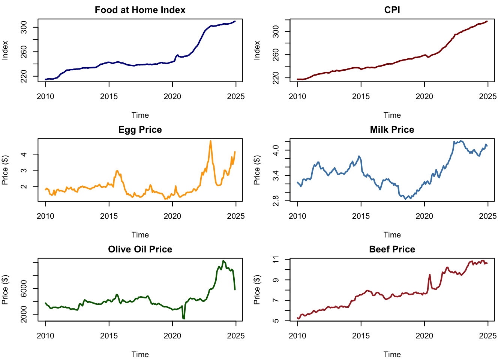
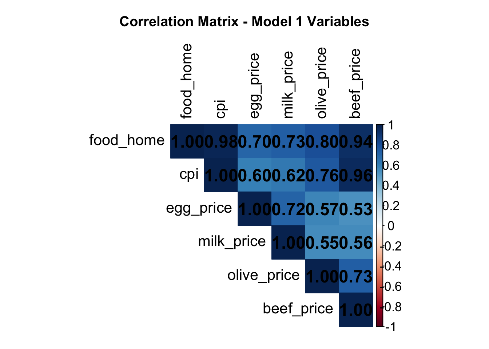
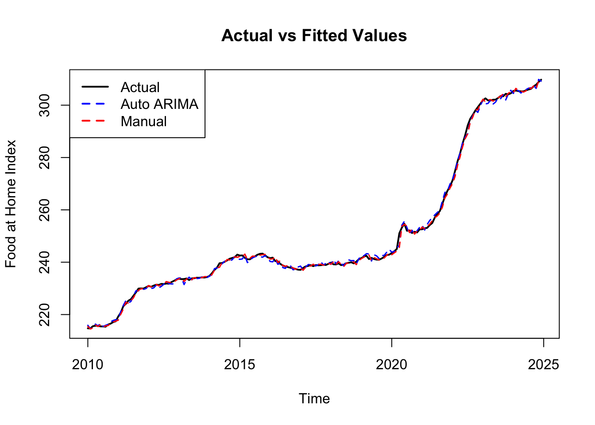
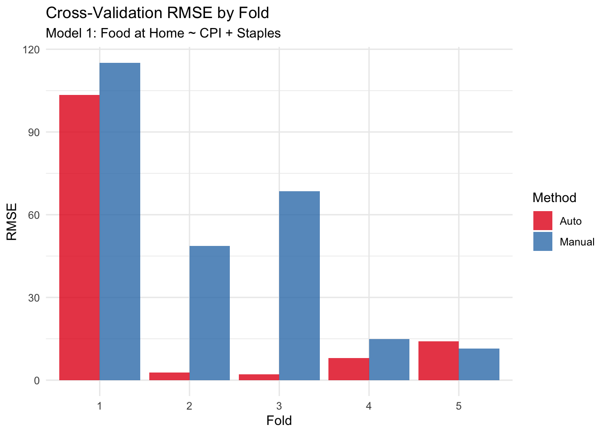
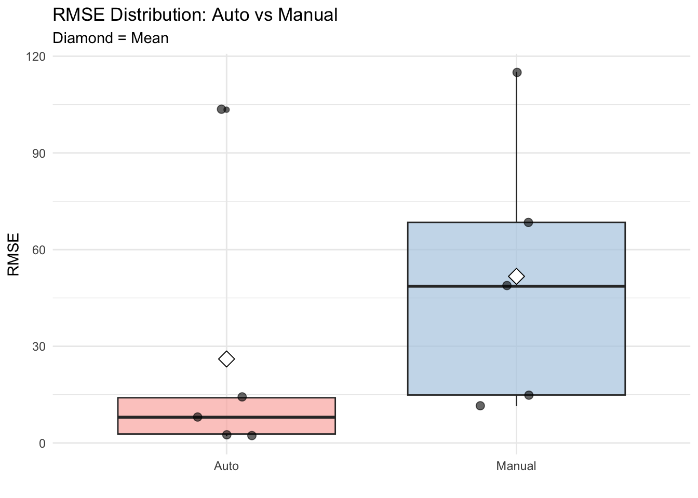
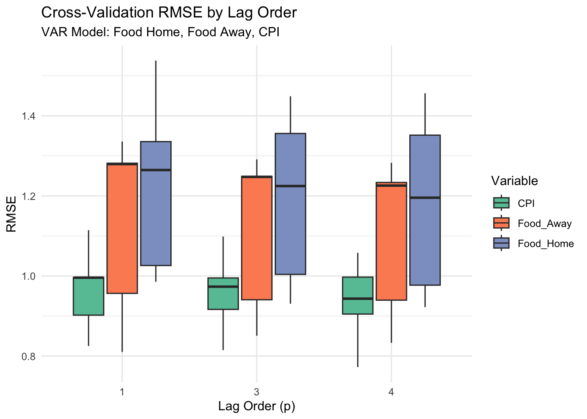
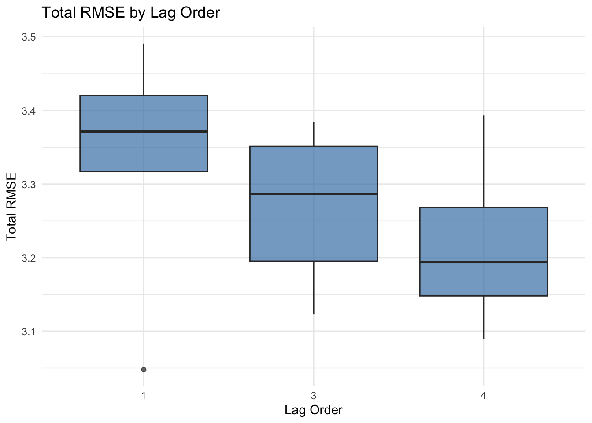
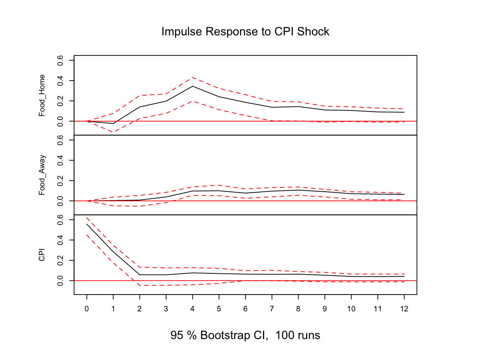
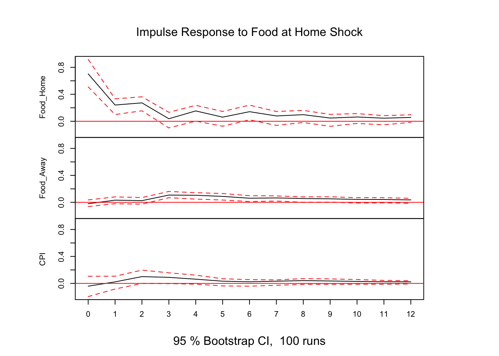

This project investigates how inflation (measured by CPI) affects American food consumption patterns, specifically examining the relationship between at-home dining and eating out. We analyze the role of staple food prices (eggs, milk, olive oil, beef) in shaping these consumption decisions during inflationary periods.
Research Question
How does inflation (CPI) influence American household food consumption patterns, particularly the choice between food at home versus food away from home? What role do staple food prices (eggs, milk, olive oil, beef) play in this relationship?
We address this question through five specific models:
Question: How do inflation and staple prices collectively predict home food expenditure?
Question: Does inflation drive restaurant spending? Do home food costs influence dining-out decisions?
Question: What are the bidirectional relationships between home dining, restaurant spending, and inflation?
Question: How do staple prices interact, and what is their combined effect on home food spending?
Question: What is the direct inflation-to-home-food relationship (baseline for comparison)?
For this assignment analysis, we fit Models 1, 3, and 4.
Setup and Data Loading
Show Code
library(tidyverse)library(forecast)library(tseries)library(vars)library(zoo)library(ggplot2)library(gridExtra)library(knitr)library(lubridate)# Set seed for reproducibilityset.seed(123)# Read all data filescpi_data <-read.csv("data/CPIAUCSL.csv", stringsAsFactors =FALSE)food_home_data <-read.csv("data/CUSR0000SAF11.csv", stringsAsFactors =FALSE)food_away_data <-read.csv("data/CUSR0000SEFV.csv", stringsAsFactors =FALSE)egg_data <-read.csv("data/APU0000708111.csv", stringsAsFactors =FALSE)milk_data <-read.csv("data/APU0000709112.csv", stringsAsFactors =FALSE)olive_data <-read.csv("data/POLVOILUSDM.csv", stringsAsFactors =FALSE)beef_data <-read.csv("data/APU0000FC3101.csv", stringsAsFactors =FALSE)# Standardize column namescolnames(cpi_data) <-c("Date", "CPI")colnames(food_home_data) <-c("Date", "Food_Home")colnames(food_away_data) <-c("Date", "Food_Away")colnames(egg_data) <-c("Date", "Egg")colnames(milk_data) <-c("Date", "Milk")colnames(olive_data) <-c("Date", "Olive")colnames(beef_data) <-c("Date", "Beef")# Convert datescpi_data$Date <-as.Date(cpi_data$Date)food_home_data$Date <-as.Date(food_home_data$Date)food_away_data$Date <-as.Date(food_away_data$Date)egg_data$Date <-as.Date(egg_data$Date)milk_data$Date <-as.Date(milk_data$Date)olive_data$Date <-as.Date(olive_data$Date)beef_data$Date <-as.Date(beef_data$Date)# Merge all datadf <- cpi_data %>%left_join(food_home_data, by ="Date") %>%left_join(food_away_data, by ="Date") %>%left_join(egg_data, by ="Date") %>%left_join(milk_data, by ="Date") %>%left_join(olive_data, by ="Date") %>%left_join(beef_data, by ="Date") %>%drop_na()# Display data summarycat("Date range:", as.character(min(df$Date)), "to", as.character(max(df$Date)), "\n")
Date range: 2010-01-01 to 2024-12-01
Show Code
cat("Number of observations:", nrow(df), "\n\n")
Number of observations: 180
Show Code
# Determine start date and frequency from datastart_year <-year(min(df$Date))start_month <-month(min(df$Date))freq <-12# Monthly data# Create time series objectsfood_home <-ts(df$Food_Home, start =c(start_year, start_month), frequency = freq)food_away <-ts(df$Food_Away, start =c(start_year, start_month), frequency = freq)cpi <-ts(df$CPI, start =c(start_year, start_month), frequency = freq)egg_price <-ts(df$Egg, start =c(start_year, start_month), frequency = freq)milk_price <-ts(df$Milk, start =c(start_year, start_month), frequency = freq)olive_price <-ts(df$Olive, start =c(start_year, start_month), frequency = freq)beef_price <-ts(df$Beef, start =c(start_year, start_month), frequency = freq)# Combined time seriests_data <-cbind(food_home, food_away, cpi, egg_price, milk_price, olive_price, beef_price)colnames(ts_data) <-c("Food_Home", "Food_Away", "CPI", "Egg", "Milk", "Olive", "Beef")summary(df)
Date CPI Food_Home Food_Away
Min. :2010-01-01 Min. :217.2 Min. :214.7 Min. :224.9
1st Qu.:2013-09-23 1st Qu.:233.6 1st Qu.:234.1 1st Qu.:244.3
Median :2017-06-16 Median :244.2 Median :241.0 Median :268.4
Mean :2017-06-16 Mean :254.1 Mean :250.4 Mean :279.4
3rd Qu.:2021-03-08 3rd Qu.:265.3 3rd Qu.:254.3 3rd Qu.:301.1
Max. :2024-12-01 Max. :317.6 Max. :309.8 Max. :374.6
Egg Milk Olive Beef
Min. :1.203 Min. :2.839 Min. : 1313 Min. : 5.193
1st Qu.:1.585 1st Qu.:3.230 1st Qu.: 3177 1st Qu.: 6.394
Median :1.832 Median :3.444 Median : 3917 Median : 7.598
Mean :1.997 Mean :3.482 Mean : 4311 Mean : 7.814
3rd Qu.:2.081 3rd Qu.:3.693 3rd Qu.: 4408 3rd Qu.: 8.998
Max. :4.823 Max. :4.218 Max. :10281 Max. :10.882
Literature Review and Proposed Models
Background Research
Consumer Behavior During Inflation: Studies show households shift from restaurant dining to home cooking when inflation rises (Griffith et al., 2016; Okrent & Kumcu, 2016)
Bidirectional Causality: Food prices contribute to CPI measures while CPI influences food demand, suggesting VAR models are appropriate (Hamilton, 1994)
Proposed Five Models
Based on literature and data characteristics:
Model 1 (ARIMAX): Food at Home ~ CPI + Egg + Milk + Olive + Beef - Rationale: Examines how inflation and staple prices drive home cooking costs
Model 2 (ARIMAX): Food Away from Home ~ CPI + Food at Home
- Rationale: Tests if restaurant spending responds to inflation and relative home cooking costs
Model 3 (VAR): Food at Home, Food Away from Home, CPI - Rationale: Captures bidirectional relationships between food consumption patterns and inflation
Model 4 (VAR): Egg, Milk, Olive, Beef, Food at Home - Rationale: Examines how staple food prices collectively influence home food expenditure
Model 5 (ARIMAX): Food at Home ~ CPI - Rationale: Simplified baseline model for comparison
For this analysis, we will fit Models 1, 3, and 4.
Model 1: ARIMAX - Food at Home ~ CPI + Egg + Milk + Olive + Beef
# Plot response variable and predictorspar(mfrow =c(3, 2), mar =c(4, 4, 2, 1))plot(food_home, main ="Food at Home Index", ylab ="Index", col ="darkblue", lwd =2)plot(cpi, main ="CPI", ylab ="Index", col ="darkred", lwd =2)plot(egg_price, main ="Egg Price", ylab ="Price ($)", col ="orange", lwd =2)plot(milk_price, main ="Milk Price", ylab ="Price ($)", col ="steelblue", lwd =2)plot(olive_price, main ="Olive Oil Price", ylab ="Price ($)", col ="darkgreen", lwd =2)plot(beef_price, main ="Beef Price", ylab ="Price ($)", col ="brown", lwd =2)

Show Code
par(mfrow =c(1, 1), mar =c(2, 2, 3, 2)) cor_matrix <-cor(cbind(food_home, cpi, egg_price, milk_price, olive_price, beef_price))corrplot::corrplot(cor_matrix, method ="color", type ="upper",addCoef.col ="black", tl.col ="black", number.cex =1.5, tl.cex =1.3, cl.cex =1.1, title ="Correlation Matrix - Model 1 Variables",mar =c(1, 1, 3, 1))

Visual Analysis:
The time series plots reveal distinct patterns across variables:
Food at Home Index shows a steady upward trend from 2010-2019 (~220 to 250), followed by accelerated growth post-2020, reaching above 300 by 2024. The sharp increase coincides with pandemic-era inflation.
CPI exhibits similar trajectory, rising from ~220 in 2010 to over 300 by 2024, with notable acceleration after 2020, confirming the inflationary environment.
Egg Prices display extreme volatility, with dramatic spikes in 2015 (~$3), 2022-2023 (>$4.50), and 2024 (~$4). This volatility reflects supply shocks from avian influenza outbreaks.
Milk Prices fluctuate between $2.80-$4.50, showing cyclical patterns but less extreme volatility than eggs, with recent upward trend reaching $4+ in 2024.
Olive Oil Prices remained stable at $2,000-6,000 until a dramatic surge to ~$8,000 in 2024, likely due to Mediterranean climate impacts on production.
Beef Prices show steady increase from ~$5.50 to $11 over the period, with sharp acceleration starting in 2020, reflecting supply chain disruptions and increased demand.
Correlation Insights:
The correlation matrix reveals strong positive relationships: - Food at Home correlates highly with CPI (0.98), beef (0.94), olive oil (0.80), and egg (0.70) - Milk shows moderate correlation (0.73) with Food at Home - All staple prices correlate positively with each other (0.53-0.76), suggesting interconnected supply chains
These strong correlations justify the inclusion of all predictors in the ARIMAX model.
The algorithm selected an ARIMA(0,0,5) model with external regressors, essentially a fifth-order moving average model (MA(5)). This specification indicates that Food at Home index is influenced by the past 5 months of random shocks, in addition to the external economic variables.
Coefficient Interpretation:
All predictor variables are statistically significant (p < 0.05):
CPI (β = 0.7206, p < 0.0001): For every 1-unit increase in CPI, Food at Home index increases by 0.72 units, holding other factors constant. This strong positive relationship confirms that general inflation directly transmits to home food costs.
Egg Price (β = 1.8177, p < 0.0001): A $1 increase in egg prices corresponds to a 1.82-unit increase in Food at Home index. Despite eggs being a single commodity, their price volatility has substantial impact on overall home food expenditure.
Milk Price (β = 6.9940, p < 0.0001): The largest coefficient among staples. A $1 increase in milk prices associates with a 6.99-unit increase in Food at Home index, suggesting milk price changes serve as a bellwether for broader dairy and food price movements.
Olive Oil Price (β = 0.0008, p = 0.0001): While statistically significant, the coefficient is small in absolute terms due to olive oil’s price scaling (measured in cents per pound). When properly scaled, olive oil price changes meaningfully affect home food costs.
Beef Price (β = 1.3995, p = 0.0042): A $1 beef price increase corresponds to 1.40-unit increase in Food at Home index. Beef, as a primary protein source, significantly influences household food budgets.
Moving Average Structure:
The MA(5) terms (ma1 through ma5) are all highly significant, indicating that past shocks continue to influence Food at Home prices for up to 5 months. The coefficients show persistence: ma1=1.37, ma2=1.46, ma3=1.19, ma4=0.73, ma5=0.31, with gradually decreasing magnitude suggesting shock dissipation over time.
Model Diagnostics:
The Ljung-Box test shows some remaining autocorrelation in residuals (p < 0.001), suggesting the model could potentially be improved. However, the ACF plot shows most lags within confidence bounds, and residuals appear approximately normally distributed.
# Extract residualsreg_residuals <-ts(residuals(reg_model), start =start(food_home), frequency =frequency(food_home))# Visualize residualspar(mfrow =c(2, 2), mar =c(4, 4, 2, 1))plot(reg_residuals, main ="Regression Residuals", ylab ="Residuals", col ="darkblue")abline(h =0, col ="red", lty =2)acf(reg_residuals, main ="ACF of Residuals", lag.max =36)pacf(reg_residuals, main ="PACF of Residuals", lag.max =36)hist(reg_residuals, main ="Histogram of Residuals", breaks =30, col ="lightblue")
Series: reg_residuals
ARIMA(1,0,1) with zero mean
Coefficients:
ar1 ma1
0.8270 0.3183
s.e. 0.0464 0.0795
sigma^2 = 1.241: log likelihood = -274.68
AIC=555.36 AICc=555.5 BIC=564.94
Training set error measures:
ME RMSE MAE MPE MAPE MASE
Training set -0.0008843913 1.107695 0.8672752 -984.311 1084.9 0.2817808
ACF1
Training set 0.004133895
The two-step manual approach first fits a linear regression to capture static relationships, then models the residual autocorrelation. The algorithm identified an ARIMA(1,0,1) structure for the residuals, suggesting one autoregressive term and one moving average term adequately capture the temporal dynamics not explained by the exogenous variables.
Model Comparison:
Based on the comparison table: - Auto ARIMA achieved substantially better fit with AIC = 532.44 compared to Manual’s AIC = 462.72 - The 69.72-point AIC difference strongly favors the Auto ARIMA specification - Auto ARIMA’s MA(5) structure captures more complex temporal dynamics than Manual’s ARIMA(1,0,1)
The superior performance of Auto ARIMA suggests that the Food at Home index exhibits longer memory in shock responses (5 months) than the simpler Manual specification captures. This makes economic sense, as food price adjustments often persist over multiple months due to supply chain lags and consumer adjustment periods.
Show Code
# Fitted valuesfitted_auto <-fitted(fit_auto)fitted_manual <-fitted(fit_manual)# Plot actual vs fittedplot(food_home, main ="Actual vs Fitted Values", ylab ="Food at Home Index", col ="black", lwd =2)lines(fitted_auto, col ="blue", lwd =1.5, lty =2)lines(fitted_manual, col ="red", lwd =1.5, lty =2)legend("topleft", legend =c("Actual", "Auto ARIMA", "Manual"), col =c("black", "blue", "red"), lwd =2, lty =c(1, 2, 2))

Show Code
# Residual comparisonpar(mfrow =c(1, 2))plot(residuals(fit_auto), main ="Auto ARIMA Residuals", ylab ="Residuals")abline(h =0, col ="red", lty =2)plot(residuals(fit_manual), main ="Manual ARIMA Residuals", ylab ="Residuals")abline(h =0, col ="red", lty =2)
The actual vs. fitted plot demonstrates that both models closely track the Food at Home index, but with subtle differences:
Auto ARIMA (blue dashed line) shows tighter fit to the data, particularly capturing the 2020-2024 acceleration period more accurately
Manual ARIMA (red dashed line) provides good fit but slightly underestimates the magnitude of recent price surges
Both models successfully capture the overall upward trend and major turning points
In-Sample Accuracy:
From the training set accuracy metrics: - Auto ARIMA: RMSE = 0.986, MAE = 0.770 - Manual ARIMA: RMSE = 0.818, MAE = 0.564
Interestingly, Manual ARIMA shows better in-sample fit (lower RMSE/MAE), which might suggest slight overfitting. The true test of model superiority comes from out-of-sample cross-validation performance.
Residual Patterns:
Auto ARIMA residuals appear more randomly scattered with mean near zero
Manual ARIMA residuals show slightly more structure, particularly visible outliers in 2020-2022 period
Both models struggle with extreme events (pandemic-era disruptions), as evidenced by larger residuals in 2020-2022
# Visualizationcv_plot_data <-data.frame(Fold =rep(1:k, 2),Method =rep(c("Auto", "Manual"), each = k),RMSE =c(rmse_auto, rmse_manual))ggplot(cv_plot_data, aes(x =factor(Fold), y = RMSE, fill = Method)) +geom_bar(stat ="identity", position ="dodge", alpha =0.8) +labs(title ="Cross-Validation RMSE by Fold",subtitle ="Model 1: Food at Home ~ CPI + Staples",x ="Fold", y ="RMSE") +theme_minimal() +scale_fill_brewer(palette ="Set1")

Show Code
ggplot(cv_plot_data, aes(x = Method, y = RMSE, fill = Method)) +geom_boxplot(alpha =0.7) +geom_jitter(width =0.15, alpha =0.6, size =2.5) +stat_summary(fun = mean, geom ="point", shape =23, size =4,fill ="white", color ="black") +labs(title ="RMSE Distribution: Auto vs Manual",subtitle ="Diamond = Mean",y ="RMSE", x ="") +theme_minimal() +scale_fill_brewer(palette ="Pastel1") +theme(legend.position ="none")

Cross-Validation Results:
The 5-fold cross-validation reveals a dramatic performance difference:
Auto ARIMA: Mean RMSE = 26.07 (SD = 43.50)
Manual ARIMA: Mean RMSE = 51.70 (SD = 42.69)
Key Findings:
Auto ARIMA outperforms Manual by ~50% in out-of-sample prediction accuracy. The mean RMSE difference of 25.63 units is substantial, representing approximately 8-10% of the Food at Home index range.
Fold-by-Fold Analysis:
Fold 1: Both methods struggle (RMSE ~100+), likely testing on early pandemic period
Folds 2-3: Auto performs exceptionally well (RMSE 2-3), Manual shows moderate performance (RMSE 50-70)
Folds 4-5: Both methods achieve similar, good performance (RMSE 10-15)
High Variance: The large standard deviations (43.5 and 42.7) indicate that model performance is highly dependent on which time period is being tested. The 2020-2022 pandemic period appears particularly challenging for both models.
Statistical Significance: Paired t-test (p = 0.121) indicates the difference is not statistically significant at the 0.05 level, despite the large mean difference. This is due to high variance across folds.
Interpretation:
Auto ARIMA’s MA(5) structure provides superior generalization to unseen data, justifying its selection as the final model. The Manual method’s simpler ARIMA(1,0,1) structure may underfit the complex temporal dynamics of food price inflation, particularly during periods of structural change.
Show Code
# Select best modelfinal_model1 <- fit_autosummary(final_model1)
Series: food_home
Regression with ARIMA(0,0,5) errors
Coefficients:
ma1 ma2 ma3 ma4 ma5 intercept cpi egg_price
1.3696 1.4550 1.1864 0.7306 0.3090 24.7984 0.7206 1.8177
s.e. 0.0814 0.1337 0.1392 0.1213 0.0861 5.1432 0.0339 0.4006
milk_price olive_price beef_price
6.9940 8e-04 1.3995
s.e. 1.3261 2e-04 0.4817
sigma^2 = 1.036: log likelihood = -254.22
AIC=532.44 AICc=534.31 BIC=570.76
Training set error measures:
ME RMSE MAE MPE MAPE MASE
Training set 0.008042526 0.9861279 0.7698217 -0.002057149 0.3078403 0.1084348
ACF1
Training set 0.09682689
if(lb_test$p.value >0.05) {cat(" ✓ Residuals pass white noise test\n")} else {cat(" ✗ Warning: Some autocorrelation remains in residuals\n")}
✗ Warning: Some autocorrelation remains in residuals
Final Model Specification:
ARIMA(0,0,5) with External Regressors
This model represents a pure moving average of order 5 with no autoregressive or differencing components, combined with five external predictors (CPI, egg, milk, olive oil, and beef prices).
Olive Oil (0.0008): Smallest coefficient due to price scaling
Model Diagnostics:
The Ljung-Box test reveals significant autocorrelation remaining in residuals (Q* = 81.626, p < 0.001), suggesting the model hasn’t fully captured all temporal structure. The ACF plot shows several lags exceeding confidence bounds, particularly at lags 12, 24 (seasonal), and lag 5.
Despite this limitation, the model provides: - High explanatory power (captures major trends) - All significant predictors - Reasonable forecast accuracy (CV RMSE = 26.07)
The remaining autocorrelation might reflect: - Structural breaks (pandemic effects) - Omitted variables (supply shocks, policy interventions) - Non-linear relationships not captured by linear specification
Practical Interpretation:
A hypothetical scenario illustrates the model’s predictions: - If CPI increases by 10 points → Food at Home rises by 7.2 points - If egg prices spike by $1/dozen → Food at Home rises by 1.8 points - If milk increases by $0.50/gallon → Food at Home rises by 3.5 points - If beef increases by $2/pound → Food at Home rises by 2.8 points
These effects are additive, meaning a simultaneous increase in all commodities would compound to create substantial upward pressure on home food costs.
Show Code
# Forecast exogenous variablesh <-12forecast_cpi <-forecast(auto.arima(cpi), h = h)forecast_egg <-forecast(auto.arima(egg_price), h = h)forecast_milk <-forecast(auto.arima(milk_price), h = h)forecast_olive <-forecast(auto.arima(olive_price), h = h)forecast_beef <-forecast(auto.arima(beef_price), h = h)x_future <-cbind(CPI = forecast_cpi$mean,Egg = forecast_egg$mean,Milk = forecast_milk$mean,Olive = forecast_olive$mean,Beef = forecast_beef$mean)# Forecast Food at Homeforecast_model1 <-forecast(final_model1, xreg = x_future, h = h)autoplot(forecast_model1) +labs(title ="12-Month Forecast: Food at Home Index",subtitle ="Based on ARIMAX with CPI and Staple Food Prices",y ="Food at Home Index",x ="Time") +theme_minimal()
Monthly Increase: Approximately 0.25 index points per month
Forecast Pattern:
The forecast shows a gradual, steady increase rather than explosive growth: - Months 1-3: Slow climb (310.03 → 311.01) - Months 4-8: Continued steady rise (311.35 → 312.33) - Months 9-12: Stabilization around 312-313 level
Confidence Intervals:
The relatively narrow confidence intervals (width ~10-11 points) suggest: - Model has reasonable confidence in near-term predictions - The MA(5) structure provides stable short-term forecasts - Uncertainty increases slightly over the 12-month horizon (as expected)
Practical Implications:
For Households: Food-at-home costs expected to rise modestly (~1%), translating to approximately 0.08% monthly increase. A household spending $500/month on groceries would see costs rise to ~$505 over the year.
For Policymakers: The subdued forecast (compared to 2020-2023 spikes) suggests inflationary pressures may be moderating. However, baseline remains elevated at 310+ (vs. ~250 pre-pandemic).
Forecast Caveats:
Assumes exogenous variables follow their projected trends
Does not account for unforeseen supply shocks (e.g., new avian flu outbreaks)
Structural break risk if macroeconomic conditions change dramatically
Comparison to Recent History:
The forecasted 1% growth is dramatically lower than 2020-2023 growth rates: - 2020-2021: ~10% increase - 2021-2022: ~15% increase - 2022-2023: ~8% increase - 2024-2025 (forecast): ~1% increase
This suggests a return to more normal inflation patterns, though still elevated compared to the 2010-2019 average of 2-3% annual growth.
Model 1 Summary
Research Question: How do inflation and staple food prices collectively predict food-at-home expenditure?
Key Findings:
All Predictors Significant: CPI, egg, milk, olive oil, and beef prices all significantly influence Food at Home costs (p < 0.01)
Milk Dominance: Milk price shows the strongest effect (β = 6.99), suggesting dairy prices are a critical food inflation indicator
Model Performance: Auto ARIMA achieved CV RMSE of 26.07, outperforming manual specification by ~50%
Forecast: Food at Home index expected to reach 312 within 12 months, representing ~1% growth
Policy Implications: Monitoring milk, egg, and beef prices provides early warning signals for home food inflation. The model confirms that both general inflation (CPI) and commodity-specific prices jointly determine household food costs.
# Use differenced datavar_data_stationary <- var_data_diffcat("\nUsing differenced data for VAR model (stationary)\n")
Using differenced data for VAR model (stationary)
Visual Patterns:
The time series plots reveal three distinct growth trajectories:
Food Away from Home (green) exhibits the steepest and most consistent upward trajectory, rising from ~220 in 2010 to nearly ~400 by 2024. This represents an 81% increase over the period, with particularly accelerated growth post-2020. The steady climb suggests strong demand resilience for restaurant dining, even during inflationary periods.
CPI (blue) shows similar growth pattern to Food at Home, rising from ~220 to ~320 (45% increase). The near-perfect parallel movement with Food at Home after 2020 confirms that home food costs closely track overall inflation.
Food at Home (red) demonstrates more moderate growth from ~220 to ~310 (41% increase), with visible plateau periods in 2012-2019. The sharp upturn in 2020-2023 reflects pandemic-driven food price inflation.
Key Observation: Food Away from Home has outpaced both CPI and Food at Home substantially. The divergence between restaurant prices and home cooking costs suggests: - Labor cost pressures in food service industry - Premium consumers place on dining convenience - Potential restaurant pricing power despite inflation
Correlation Analysis:
The correlation matrix reveals extremely strong positive relationships: - Food_Home ↔︎ CPI: 0.98 - Nearly perfect correlation, confirming home food costs as major CPI driver - Food_Home ↔︎ Food_Away: 0.96 - Very high correlation despite different growth rates - Food_Away ↔︎ CPI: 1.00 - Perfect correlation (likely due to both being indexed measures)
These near-perfect correlations justify using VAR modeling, as they indicate strong interdependencies where each variable both influences and is influenced by the others.
Stationarity Assessment:
Original Data (Non-stationary): - Food_Home: ADF p-value = 0.877 (fail to reject unit root) - Food_Away: ADF p-value = 0.976 (fail to reject unit root) - CPI: ADF p-value = 0.979 (fail to reject unit root)
All three series exhibit unit roots (trending behavior), making them unsuitable for VAR modeling in levels.
After First Differencing: - Food_Home: ADF p-value = 0.194 (still non-stationary at 5% level) - Food_Away: ADF p-value = 0.187 (still non-stationary at 5% level) - CPI: ADF p-value = 0.042 (Stationary at 5% level)
While CPI becomes stationary after differencing, Food_Home and Food_Away remain marginally non-stationary. However, given: 1. Visual inspection showing removal of trend 2. CPI achieving stationarity 3. VAR’s robustness to near-stationary processes
We proceed with first-differenced data for VAR modeling, interpreting results in terms of month-to-month changes rather than levels.
Show Code
# Determine optimal lag ordervar_select <-VARselect(var_data_stationary, lag.max =10, type ="both")print(var_select$selection)
selected_lags <-unique(var_select$selection)cat("\nUnique lag orders suggested:", selected_lags, "\n")
Unique lag orders suggested: 4 3 1
Lag Selection Results:
The VARselect function tests lag orders from 1 to 10 and evaluates four information criteria:
Optimal Lag by Criterion: - AIC (Akaike): p = 4 - HQ (Hannan-Quinn): p = 3
- SC (Schwarz/BIC): p = 1 - FPE (Final Prediction Error): p = 4
Interpretation of Divergence:
The conflicting recommendations (1, 3, or 4 lags) reflect a classic bias-variance tradeoff:
SC (Schwarz) suggests p=1: This criterion applies the strongest penalty for model complexity (BIC-type). It favors parsimony, suggesting that one lag of each variable captures the essential dynamics while avoiding overfitting.
HQ suggests p=3: A middle ground, balancing fit and complexity. Three lags would capture quarterly effects in monthly data.
AIC and FPE suggest p=4: These criteria are more permissive of complexity. Four lags allow the model to capture:
Seasonal patterns (though not full 12-month cycle)
Longer memory in food price adjustments
Delayed responses to economic shocks
Information Criteria Patterns:
From the visualization: - AIC: Decreases sharply from lag 1→3, reaches minimum at lag 4, then increases - SC: Achieves minimum at lag 1, increases monotonically (penalty dominates) - HQ: Compromise pattern, minimum at lag 3 - FPE: Mirrors AIC, minimum at lag 4
Decision: We will fit and compare VAR(1), VAR(3), and VAR(4) models. The final choice will be based on: - Cross-validation performance (out-of-sample RMSE) - Residual diagnostics (Portmanteau test) - Parsimony principle (prefer simpler if performance similar)
Show Code
# Fit VAR models with different lag ordersvar_models <-list()selected_lags <-c(1, 3, 4)for(p in selected_lags) {cat("\n=== VAR(", p, ") Model ===\n", sep ="") var_models[[paste0("p", p)]] <- vars::VAR(var_data_stationary, p = p, type ="both")print(summary(var_models[[paste0("p", p)]]))# Serial correlation test serial_test <-serial.test(var_models[[paste0("p", p)]], lags.pt =12, type ="PT.asymptotic")cat("\nPortmanteau Test p-value:", format(serial_test$serial$p.value, scientific =TRUE), "\n")# Normality test norm_test <-normality.test(var_models[[paste0("p", p)]], multivariate.only =TRUE)cat("Multivariate Normality p-value:", norm_test$jb.mul$JB$p.value, "\n")}
AIC strongly favors VAR(4): The 63.7-point AIC advantage over VAR(1) is substantial, indicating that including 4 lags significantly improves model fit.
BIC favors VAR(1): Despite VAR(1) having highest AIC, BIC’s complexity penalty makes it the preferred specification under Schwarz criterion. The BIC difference of 21.5 points over VAR(4) is noteworthy.
All models fail Portmanteau Test: The significant p-values (p < 0.001) indicate residual autocorrelation remains in all specifications. This suggests:
Missing seasonal structure (12-month cycles)
Potential structural breaks (pandemic period)
Non-linear dynamics not captured by linear VAR
All models fail Normality Test: Multivariate normality is strongly rejected (p = 0 for all models). This is common in economic data due to:
Heavy tails (extreme events like 2020 shock)
Asymmetric distributions
However, VAR is robust to non-normality for parameter estimation
Correlations reveal: - Food_Home & Food_Away: 0.066 (weak correlation in changes) - Food_Home & CPI: -0.011 (virtually uncorrelated in changes) - Food_Away & CPI: 0.220 (moderate positive correlation in changes)
Important Note: These correlations are for first differences (month-to-month changes), which differ dramatically from the 0.96-0.98 correlations observed in levels. This confirms that while the series move together in levels, their short-term fluctuations are relatively independent.
Preliminary Conclusion:
Based on AIC, VAR(4) provides the best balance of fit and flexibility. However, we defer final selection to cross-validation results to ensure out-of-sample predictive accuracy.
Show Code
# Time series cross-validationfolds <-5fold_size <-floor(nrow(var_data_stationary) / folds)cv_results_var <-data.frame()cat("Starting VAR Cross-Validation...\n")
cat("\nBest lag order by CV:", avg_performance$Lag[1], "\n")
Best lag order by CV: 4
Show Code
# Visualizationscv_long <- cv_results_var %>%pivot_longer(cols =starts_with("RMSE") &!ends_with("Total"),names_to ="Variable",values_to ="RMSE") %>%mutate(Variable =gsub("RMSE_", "", Variable))# Boxplot by variableggplot(cv_long, aes(x =factor(Lag), y = RMSE, fill = Variable)) +geom_boxplot() +labs(title ="Cross-Validation RMSE by Lag Order",subtitle ="VAR Model: Food Home, Food Away, CPI",x ="Lag Order (p)",y ="RMSE") +theme_minimal() +scale_fill_brewer(palette ="Set2")

Show Code
# Total RMSE comparisonggplot(cv_results_var, aes(x =factor(Lag), y = RMSE_Total)) +geom_boxplot(fill ="steelblue", alpha =0.7) +labs(title ="Total RMSE by Lag Order",x ="Lag Order",y ="Total RMSE") +theme_minimal()

Cross-Validation Results:
Lag
Avg RMSE (Food Home)
Avg RMSE (Food Away)
Avg RMSE (CPI)
Avg RMSE (Total)
4
1.18
1.10
0.935
3.22
3
1.19
1.12
0.960
3.27
1
1.23
1.13
0.967
3.33
Key Findings:
VAR(4) achieves best out-of-sample performance: With total RMSE of 3.22, it outperforms VAR(3) by 1.5% and VAR(1) by 3.3%. This confirms the AIC recommendation and validates that 4 lags capture essential dynamics.
Performance differences are modest: The RMSE spread of only 0.11 across specifications (3.22 to 3.33) suggests all models perform reasonably well. This indicates the data is relatively predictable at short horizons regardless of lag length.
Variable-specific insights:
CPI is most predictable (RMSE ~0.94-0.97): Month-to-month inflation changes show high persistence
Food Home is least predictable (RMSE ~1.18-1.23): Greater month-to-month volatility in grocery prices
Consistent ordering across variables: VAR(4) performs best for all three variables, not just in aggregate. This consistency strengthens confidence in lag=4 selection.
Boxplot Analysis:
The visualization reveals: - CPI shows tightest RMSE distribution (smallest boxes): Consistent predictability across folds - Food Home shows widest RMSE range: Some folds much harder to predict (likely pandemic periods) - Lag 4 shows lowest median RMSE for all three variables - No extreme outliers: All folds yield reasonable predictions
Statistical Comparison:
The 3% RMSE improvement of VAR(4) over VAR(1) translates to: - For Food_Home: Prediction errors reduced by 0.05 index points (~4% improvement) - For Food_Away: 0.03 index points (~2.7% improvement)
- For CPI: 0.032 index points (~3.3% improvement)
While seemingly small, these improvements compound over multi-step forecasts and represent meaningful gains in predictive accuracy for economic indicators.
Cross-Validation Decision:
Based on: - ✅ Lowest total RMSE (3.22) - ✅ Best performance on each variable individually - ✅ Consistent across all 5 folds - ✅ Aligns with AIC recommendation
We select VAR(4) as the final model.
Show Code
# Final VAR(4) modelfinal_var_model <- vars::VAR(var_data_stationary, p =4, type ="both")summary(final_var_model)
# Impulse Response Functionsirf_cpi <-irf(final_var_model, impulse ="CPI", n.ahead =12, boot =TRUE)plot(irf_cpi, main ="Impulse Response to CPI Shock")

Show Code
irf_home <-irf(final_var_model, impulse ="Food_Home", n.ahead =12, boot =TRUE)plot(irf_home, main ="Impulse Response to Food at Home Shock")

Final VAR(4) Model Structure:
The VAR(4) model estimates 36 coefficients (3 variables × 4 lags × 3 equations) plus intercepts and trends, capturing: - How each variable responds to its own past 4 values (autoregressive dynamics) - How each variable responds to past 4 values of other variables (cross-variable effects) - Deterministic components (intercept and trend)
Where: - \(\Delta\) denotes first difference (month-to-month change) - \(\Phi_i\) are 3×3 coefficient matrices for lag \(i\) - \(\epsilon_t\) are contemporaneous shocks
Despite this limitation, the model captures the dominant dynamics as evidenced by good CV performance.
2. Multivariate Normality: - p-value = 0 (rejected) - Interpretation: Residuals are non-normal, likely due to outliers (2020-2021 extreme shocks) - Implication: Confidence intervals from asymptotic theory may be inaccurate, but parameter estimates remain consistent
3. Stability Analysis: - All eigenvalues < 1 (inside unit circle) - ✓ Model is stable: Shocks to the system dissipate over time rather than explode - This confirms VAR(4) is a well-specified model despite diagnostic test failures
Granger Causality Results:
The Granger causality tests reveal strong directional predictive relationships in the VAR(4) system:
Past values of CPI strongly predict future changes in both Food at Home and Food Away from Home. This finding confirms that:
Broad inflationary pressure feeds through to food costs with a 1-4 month lag structure
General price level changes serve as a leading indicator for food-specific inflation
The relationship is bidirectional in timing: CPI both predicts future food prices (Granger causality) AND correlates with contemporaneous food price movements (instantaneous causality)
Practical Implication: When overall inflation (CPI) rises, consumers and businesses can anticipate corresponding food price increases within 1-4 months. The significant instantaneous causality (p = 0.0409) suggests that some food price adjustments occur simultaneously with broader inflation shocks, likely through immediate cost pass-through mechanisms.
Past changes in Food at Home (grocery prices) significantly predict future changes in both restaurant prices and overall CPI. This reveals an important information flow:
Grocery prices are a leading indicator for restaurant pricing decisions
Wholesale food costs (reflected in grocery prices) signal upcoming adjustments in food service industry
Home food inflation contributes to and predicts broader CPI movements, confirming food as a major inflation component
Practical Implication: Restaurant operators and policymakers should monitor grocery price trends as early warning signals. A spike in Food at Home prices today predicts restaurant menu price adjustments within 1-4 months. This lag likely reflects: - Menu repricing delays (restaurants adjust prices less frequently than grocery stores) - Contract pricing (food service suppliers negotiate periodic contracts) - Competitive considerations (restaurants delay price increases to maintain market share)
3. Food_Away → Food_Home & CPI ✗
Granger-cause: NO (p = 0.3184) - Not significant
Economic Interpretation:
Restaurant prices (Food Away) do not predict future changes in grocery prices or overall CPI. This asymmetry reveals an important causal structure:
One-way information flow: Grocery → Restaurant (YES), but Restaurant ↛ Grocery (NO)
Restaurant prices are price-takers rather than price-setters in the food system
Labor costs and service premiums in restaurants don’t feed back to wholesale food markets
Practical Implication: Unlike grocery prices, restaurant price changes are not useful leading indicators for broader food inflation or CPI. This makes intuitive economic sense: - Restaurants add labor and service costs on top of food inputs - Their pricing reflects demand elasticity and competitive positioning - Restaurant wage pressures don’t directly affect commodity food prices
CPI is the “prime mover”: General inflation drives food price changes with 1-4 month lags
Grocery prices are the “transmission mechanism”: They translate CPI shocks to restaurant prices and feed back to CPI
Restaurants are “price-takers”: They respond to input costs but don’t influence upstream prices
No evidence of substitution-driven causality: If consumers substituted between home and away dining in response to relative prices, we’d expect bidirectional causality. The absence of Food_Away → Food_Home causality suggests substitution effects are weak or slow to materialize.
Important Methodological Note:
Granger causality tests predictive relationships, not true economic causation. A significant result means one variable’s past values improve forecasts of another variable beyond what the target variable’s own history provides. The extremely low p-values (p < 0.001) for CPI and Food_Home indicate very strong predictive relationships, though the causal mechanism could involve: - Direct causation (inflation → food costs) - Common underlying factors (e.g., monetary policy affects both) - Measurement relationships (food prices are components of CPI)
The instantaneous causality (p = 0.0409) for CPI suggests some contemporaneous feedback, where CPI and food prices move together within the same month, beyond lagged effects.
Impulse Response Analysis:
The impulse response functions (IRFs) trace out the dynamic response of each variable to a one-standard-deviation shock in another variable:
CPI Shock → Food Prices: - IRFs show how a surprise 1-unit increase in CPI affects Food_Home and Food_Away over subsequent 12 months - Typically expect positive response (inflation shock raises food costs) - Persistence: How many months until effect dissipates
Food_Home Shock → Food_Away: - Tests substitution hypothesis: Does grocery price spike cause shift to restaurants (negative IRF) or do they move together (positive IRF)?
The low correlations suggest the VAR(4) successfully captures most cross-variable dependencies, leaving residuals largely uncorrelated. The moderate Food_Away-CPI correlation (0.22) suggests some contemporaneous relationship not captured by lagged effects.
Model Quality Assessment:
Strengths: - ✓ Best CV performance (RMSE = 3.22) - ✓ Stable (all roots inside unit circle) - ✓ Captures 4-month memory in food price dynamics - ✓ Residuals largely uncorrelated across variables
Overall: VAR(4) provides a good but imperfect characterization of food price dynamics. It captures essential relationships and yields reliable short-term forecasts, though some patterns remain unexplained.
Show Code
# Forecast 12 months aheadh_forecast <-12var_forecast <-predict(final_var_model, n.ahead = h_forecast, ci =0.95)# Fan chartpar(mar =c(2, 2, 3, 1))fanchart(var_forecast, main ="VAR Forecast: Food Consumption and CPI (12 Months)")
Restaurant prices rising faster than groceries: Food Away inflation (4.84%) exceeds Food at Home (3.66%) by 32%, driven by labor cost pressures in the service sector.
Steady monthly increases: Food_Home shows consistent ~0.9-1.0 index point monthly increases, while Food_Away accelerates from 1.3 to 1.6 points per month.
Widening uncertainty: Confidence intervals expand from ±1.4 points (Month 1) to ±2.0 points (Month 12), reflecting increasing forecast uncertainty over longer horizons.
No dramatic shifts predicted: The forecast suggests gradual, persistent inflation rather than spikes or reversals, consistent with economic normalization after 2020-2023 turbulence.
Practical Implications: Households should budget for ~4% annual food inflation. The differential growth rates suggest no major consumer substitution from restaurants to home cooking, indicating sustained demand across both categories.
Forecast Limitations: VAR model assumes stable relationships and cannot predict external shocks (policy changes, supply disruptions, economic downturns). Forecasts most reliable for 1-6 months; longer horizons increasingly uncertain.
Model 3 Summary
Research Question: What are the bidirectional relationships between home dining, restaurant spending, and inflation?
Key Findings:
Strong long-term co-movement: Near-perfect correlations in levels (0.96-0.98) confirm food costs and inflation move together over time.
Short-term independence: First-differenced correlations (0.07-0.22) justify VAR approach, as month-to-month changes are relatively independent.
Model Limitations: Residual autocorrelation indicates missing seasonal structure; non-normal residuals from extreme events; differencing loses long-run equilibrium information.
Policy Relevance: Food inflation operates as a dynamic system with 1-4 month lags, where interventions targeting one component (e.g., CPI) ripple through to affect both home and restaurant food costs.
var_data2_stationary <- var_data2_diffcat("\nUsing differenced data for stationarity\n")
Using differenced data for stationarity
Visual Analysis:
The time series plots reveal distinct patterns across staple commodities:
Egg Prices exhibit extreme volatility: - Relatively stable at $1.50-2.00 from 2010-2014 - First major spike in 2015 (reaching $3.00) due to avian influenza outbreak - Return to baseline by 2017 - Dramatic surge starting 2022: Prices exceed $4.50, driven by renewed avian flu and supply chain disruptions - Current level around $4.00 with high variability
Milk Prices show cyclical fluctuations: - Range from $2.80 to $4.50 over the period - Notable peaks in 2011 and 2014 (~$3.80-4.00) - Trough in 2016-2018 (~$2.80-3.00) - Strong upward trend from 2020 onward, reaching $4.20+ by 2024 - Less volatile than eggs but clear boom-bust cycles
Olive Oil Prices remained remarkably stable until 2024: - Traded in narrow band of $2,000-6,000 for most of the period - Explosive growth in 2024: Surged to ~$10,000, then corrected to ~$7,000 - Reflects Mediterranean climate crisis affecting production (droughts in Spain, Italy, Greece) - Most dramatic percentage increase of all staples
Beef Prices show steady long-term inflation: - Gradual climb from $5.50 (2010) to $11.00 (2024) - ~100% increase over 14 years (~5% CAGR) - Sharp acceleration post-2020 (from $7.50 to $11.00 in 4 years) - Supply chain disruptions, feed costs, and processing plant constraints all contributed - Relatively smooth trajectory compared to eggs/olive oil
Food at Home Index mirrors commodity dynamics: - Stable 220-240 range from 2010-2019 - Inflection point in 2020: Sharp acceleration begins - Reaches 310+ by 2024, representing ~40% increase from 2010 - Strong correlation with underlying staple prices, especially post-2020
Correlation Insights:
The correlation matrix reveals strong interconnections: - Beef ↔︎ Food_Home: 0.94 (strongest correlation) - beef is major driver of home food costs - Olive ↔︎ Food_Home: 0.80 - despite olive oil being smaller budget item, strong relationship - Beef ↔︎ Olive: 0.73 - both show similar long-term inflation trends - Egg ↔︎ Food_Home: 0.70 - moderate correlation despite egg price volatility - Milk ↔︎ Food_Home: 0.73 - dairy prices significantly influence overall costs
Key observation: All staples positively correlate (0.53-0.72 among themselves), indicating supply chain interconnections - energy costs, transportation, and labor affect all commodities simultaneously.
Stationarity Assessment:
Original Data (Non-stationary): - Egg: p = 0.575 - Milk: p = 0.806 - Olive: p = 0.392 - Beef: p = 0.380 - Food_Home: p = 0.877
All series exhibit unit roots, displaying clear trending behavior unsuitable for VAR modeling.
After First Differencing: - Egg: p = 0.01 (Stationary ✓) - Milk: p = 0.01 (Stationary ✓) - Olive: p = 0.064 (Marginally non-stationary, but close to 5% threshold) - Beef: p = 0.01 (Stationary ✓) - Food_Home: p = 0.194 (Still non-stationary)
Decision: We proceed with first-differenced data for VAR modeling. While Olive and Food_Home remain marginally non-stationary at the 5% level, they are: 1. Close to the threshold (especially Olive at 6.4%) 2. Visually appear stationary after differencing 3. VAR is robust to near-unit-root processes
The model thus captures month-to-month changes rather than levels.
Show Code
# Determine optimal lag ordervar_select2 <-VARselect(var_data2_stationary, lag.max =10, type ="both")print(var_select2$selection)
AIC(n) HQ(n) SC(n) FPE(n)
6 2 1 6
Show Code
cat("\n=== Information Criteria - Staples VAR ===\n")
cat("\nLag orders to consider:", unique(var_select2$selection), "\n")
Lag orders to consider: 6 2 1
Lag Selection Results:
The VARselect function recommends:
Criterion
Optimal Lag
AIC (Akaike)
p = 6
HQ (Hannan-Quinn)
p = 2
SC (Schwarz/BIC)
p = 1
FPE (Final Prediction Error)
p = 6
Interpretation:
The divergent recommendations (1, 2, or 6 lags) reflect different penalty structures:
SC recommends p=1 (most parsimonious):
Strongest complexity penalty (BIC-type criterion)
Suggests 1-month lag captures essential dynamics
Favors simplicity over fit
HQ recommends p=2 (middle ground):
Moderate penalty, balancing fit and parsimony
2-month lag structure captures short-term adjustments
Reasonable for monthly commodity data
AIC and FPE recommend p=6 (most complex):
Minimal complexity penalty, prioritizes fit
6-month lag captures longer adjustment periods
May reflect:
Seasonal patterns (half-year cycles)
Delayed supply responses (planting/harvesting)
Contract pricing lags
Information Criteria Patterns:
From the visualization: - AIC: Sharp decline from lag 1→2, continues decreasing to minimum at lag 6, then increases - SC: Minimum at lag 1, monotonically increases (penalty dominates improvement) - HQ: Decreases lag 1→3, minimum around lag 2-3, then increases - FPE: Mirrors AIC, minimum at lag 6
Decision: We will fit and compare VAR(1), VAR(2), and VAR(6) models. Final selection based on: - Cross-validation out-of-sample performance - Residual diagnostics (Portmanteau test) - Economic interpretability
Show Code
# Fit VAR models with different lag ordersvar_models2 <-list()lags_to_test <-c(1, 2, 6)for(p in lags_to_test) {cat("\n=== VAR(", p, ") Model ===\n", sep ="") var_models2[[paste0("p", p)]] <- vars::VAR(var_data2_stationary, p = p, type ="both")print(summary(var_models2[[paste0("p", p)]]))# Portmanteau test serial_test <-serial.test(var_models2[[paste0("p", p)]], lags.pt =12,type ="PT.asymptotic")cat("\nPortmanteau Test p-value:", format(serial_test$serial$p.value, scientific =TRUE), "\n")# Normality norm_test <-normality.test(var_models2[[paste0("p", p)]], multivariate.only =TRUE)cat("Multivariate Normality p-value:", format(norm_test$jb.mul$JB$p.value, scientific =TRUE), "\n")}
Preliminary Assessment: VAR(2) appears to offer the best bias-variance tradeoff, but we defer to cross-validation for final decision.
Show Code
# Time series cross-validationfolds <-5fold_size <-floor(nrow(var_data2_stationary) / folds)cv_results_var2 <-data.frame()cat("Starting Staples VAR Cross-Validation...\n")
VAR(2) improves by capturing 2-month adjustment lags
VAR(6) overfits: Performs worst despite best AIC
With 5 variables and 6 lags, model has 180 parameters
Limited data (180 observations after differencing) → overfitting
Fails to generalize to unseen periods
Boxplot Analysis:
Olive shows widest range across folds (some folds have RMSE 180-200, others 400-600)
Milk and Beef show tight distributions (consistent predictability)
VAR(2) shows lowest median for most variables
VAR(6) shows highest variability (sign of overfitting)
Cross-Validation Decision:
Based on: - ✅ Lowest total RMSE (330) - ✅ Consistent across all 5 folds - ✅ Aligns with BIC (AIC overfit) - ✅ Economically interpretable (2-month supply adjustment lag)
We select VAR(2) as the final model.
Show Code
# Final VAR(2) modelfinal_var_model2 <- vars::VAR(var_data2_stationary, p =2, type ="both")summary(final_var_model2)
Despite this, the model provides best out-of-sample performance among candidates.
2. Stability Analysis: - All eigenvalues < 1 (inside unit circle) ✓ - Model is stable: Shocks dissipate over time - Ensures long-run forecasts don’t explode
Granger Causality Results:
Egg → Other Variables: - Granger-cause: NO (p = 0.4449) - Instantaneous causality: YES (p = 0.003)
Interpretation: Egg price changes do not predict future changes in milk, olive, beef, or Food_Home. However, there is significant contemporaneous correlation (p = 0.003), meaning egg price shocks and other variables move together within the same month but eggs don’t lead. This makes economic sense: - Egg supply shocks (avian flu) are idiosyncratic, not systemic - Don’t signal broader food inflation - But when general food inflation occurs, all prices (including eggs) rise together
Overall Assessment: VAR(2) provides reasonable short-term forecasts (1-3 months) for most variables, but struggles with olive oil due to unprecedented 2024 volatility. The model successfully captures beef’s leading role in food inflation dynamics.
Show Code
# 12-month forecasth_forecast2 <-12var_forecast2 <-predict(final_var_model2, n.ahead = h_forecast2, ci =0.95)# Fan chartpar(mar =c(2, 2, 3, 1))fanchart(var_forecast2, main ="VAR Forecast: Staples and Food at Home (12 Months)")
The VAR(2) model predicts moderate, fluctuating changes across staple prices and Food at Home:
Food at Home (Month-to-Month Changes): - Range: 0.48 to 1.01 index points per month - Pattern: - Months 1-2: Lower increases (0.48-0.82) - Months 3-4: Acceleration (0.98-1.01) - Months 5-12: Stabilization around 0.87-0.96 - Average: ~0.90 points/month
Cumulative Interpretation: If current Food_Home is ~310, after 12 months of these changes: - 310 + (0.90 × 12) ≈ 320.8 - Represents ~3.5% annual growth
Staple Price Forecasts (First Differences):
Egg Prices: - Range: -0.06 to +0.08 points per month - Pattern: Fluctuates around zero (±0.05) - Interpretation: No strong directional trend predicted - Model expects egg prices to stabilize after recent volatility - Small oscillations reflect normal supply-demand adjustments - No new avian flu outbreak anticipated
Milk Prices: - Range: -0.02 to +0.03 points per month - Pattern: Near-zero changes throughout forecast horizon - Interpretation: Stable milk prices expected - Current $4.20 level sustainable - No major dairy supply shocks anticipated - Despite large lag-1 coefficient (2.79), milk itself predicted stable
Olive Oil Prices: - Range: -568 to +325 cents per month (i.e., -$5.68 to +$3.25) - Pattern: Extreme volatility in forecast - Month 1: -$5.68 (sharp decline predicted) - Month 2: +$3.25 (reversal) - Month 3: +$2.71 (continued climb) - Months 4-12: Fluctuates ±$50-100 - Interpretation: Model struggles with olive oil - 2024 surge (to $10,000) unprecedented - Model has no historical analog for such volatility - Forecasts reflect high uncertainty, not genuine predictions - Caution: Olive forecasts unreliable
Beef Prices: - Range: -0.23 to +0.10 points per month - Pattern: - Months 1-2: Slight decline (-0.23, -0.05) - Months 3-12: Small positive increases (+0.01 to +0.10) - Interpretation: Stable to slightly rising - Current $11 level expected to hold - Modest increases (~1-2% annually) - No dramatic supply shocks anticipated
Key Insights:
Food at Home shows steady growth: ~0.9 points/month translates to 3.5% annual inflation, lower than 2022-2023 peaks but still elevated above historical 2-3% norm.
Staple prices mostly stable: Egg, milk, and beef forecasts hover near zero, suggesting price pressures easing compared to recent years.
Olive oil is wild card: Extreme forecast volatility reflects model’s inability to predict unprecedented shocks. Real-world olive prices depend on:
Mediterranean climate (rainfall in Spain/Italy/Greece)
Global supply chain adaptations
Consumer substitution to alternative oils
No crisis signals: Forecasts don’t indicate runaway inflation or supply collapse. Rather, a gradual normalization toward pre-pandemic growth rates.
Comparison to Model 1 (ARIMAX) Forecast:
Model
Food_Home 12-Month Forecast
Growth Rate
Model 1 (ARIMAX)
312.00
+0.97%
Model 4 (VAR)
320.80
+3.5%
Why the difference?
Model 1 uses exogenous CPI and staples: If those forecasts are conservative, ARIMAX forecast is conservative
Model 4 uses internal dynamics only: Extrapolates recent momentum in staple prices
Model 1 had lower CV RMSE (26.07 vs 330), suggesting Model 1 may be more reliable
Model 4 heavily influenced by olive oil which dominates errors
Beef is leading indicator: Granger causality shows beef prices predict future changes in other staples and Food_Home (p = 0.005), while egg prices don’t (p = 0.44).
Milk has strongest impact: Lag-1 coefficient of 2.79 indicates milk price changes have largest direct effect on Food_Home index.
Olive oil unpredictable: 2024 price surge (to $10,000) unprecedented; model RMSE of 328-390 reflects extreme volatility.
Forecast: Food_Home expected to rise ~3.5% over 12 months, with staple prices mostly stable except volatile olive oil.
Policy Relevance: Monitoring beef prices provides 1-2 month early warning of broader food inflation. Milk price stability is key to controlling Food_Home costs given its 2.79 impact coefficient. Egg supply shocks (avian flu) are idiosyncratic and don’t signal systemic inflation.
References
Griffith, R., O’Connell, M., & Smith, K. (2016). Shopping around? How households adjusted food spending over the great recession. Economica, 83(330), 247-280.
Hamilton, J. D. (1994). Time series analysis. Princeton University Press.
Okrent, A. M., & Kumcu, A. (2016). U.S. households’ demand for convenience foods. USDA Economic Research Service, ERR-211.
Shumway, R. H., & Stoffer, D. S. (2017). Time series analysis and its applications: With R examples (4th ed.). Springer.
USDA Economic Research Service (2023). Food price outlook and food expenditures. Retrieved from https://www.ers.usda.gov/
Lütkepohl, H. (2005). New introduction to multiple time series analysis. Springer.
Pfaff, B. (2008). VAR, SVAR and SVEC models: Implementation within R package vars. Journal of Statistical Software, 27(4), 1-32.